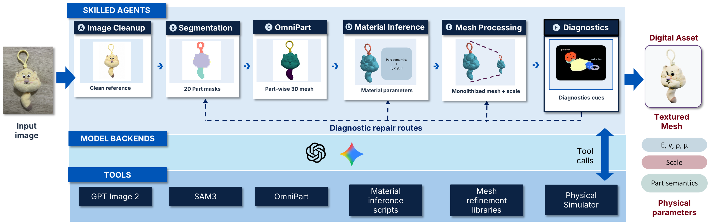

01 / Generate
Generation pipeline
Unable to load this video. Open the original video.
DiagGen converts a single image into a deformable asset through a generate–simulate–diagnose–refine loop. Stage agents coordinate geometry, material inference and meshing; model backends support their reasoning, and tools execute and validate each stage. Simulation evidence can route a candidate back for repair before export.
View the architecture diagram
